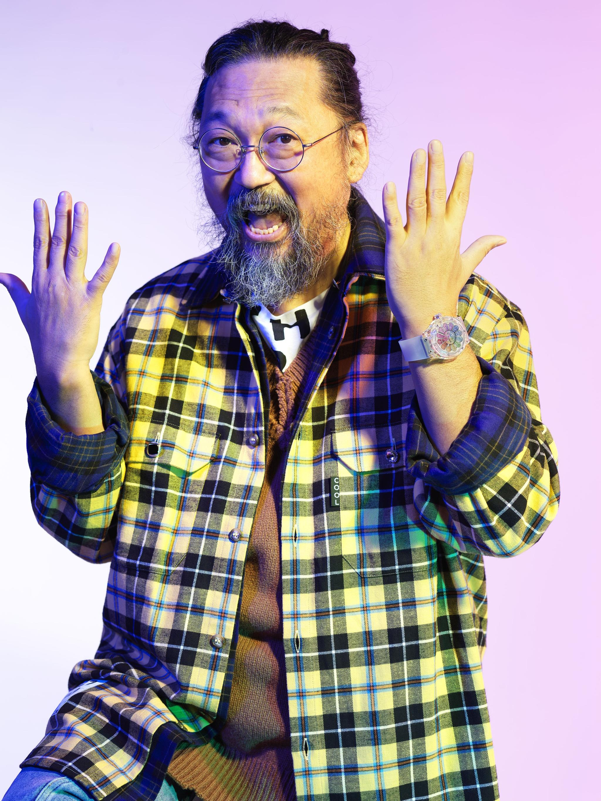

CLASSIC FUSION TAKASHI MURAKAMI SAPPHIRE RAINBOW
Hublot i Takashi Murakami predstavljaju drugi sat svoje suradnje: Classic Fusion Takashi Murakami Sapphire Rainbow. Ovaj novi sat preuzima nasmijani cvijet, ikoničnu temu rada japanskog umjetnika, i pretvara ga u vrtlog prozirnosti i boja. Hublot voli umjetnost!
Nakon što su početkom godine lansirali prvi sat – All Black sat, koji je postao trenutni kolekcionarski predmet – Hublot i Takashi Murakami nastavljaju transponirati Kawaii svijet japanskog umjetnika u horologiju, predstavljajući Classic Fusion Takashi Murakami Sapphire Rainbow sat.
Ovaj novi komad, koji se još uvijek temelji na nasmijanom cvijetu, kultnoj temi Murakamijevog rada, prešao je iz crne u boju s prozirnim efektima.
Nasmiješeni cvijet predstavlja vragolasti osmijeh na trodimenzionalnom licu koje doslovno izlazi iz brojčanika sata, protežući se dalje od safirnog kristala.
Oko ovog lica se okreće 12 šarenih latica, a njihov polikromatski učinak postiže se postavljanjem 487 kamenčića koji predstavljaju dugine boje: rubini, ružičasti safiri, ametisti, plavi safiri, tsavoriti, žuti i narančasti safiri.
Zahvaljujući genijalnom sustavu kugličnih ležajeva koji su posebno razvili Hublotovi inženjeri, latice se počinju okretati ispod kristala sata i oživljavaju nasmijani cvijet Takashija Murakamija.
U kucajuće srce sata, urari iz Nyona postavili su kalibar tvrtke HUB1214, ovdje bez funkcije štoperice. Ovaj mehanizam ima rezervu snage od 72 sata. Usmjeren na poznavatelje suvremene umjetnosti, Classic Fusion Takashi Murakami Sapphire Rainbow sat dostupan je u ograničenom izdanju od 100 komada s brojevima.